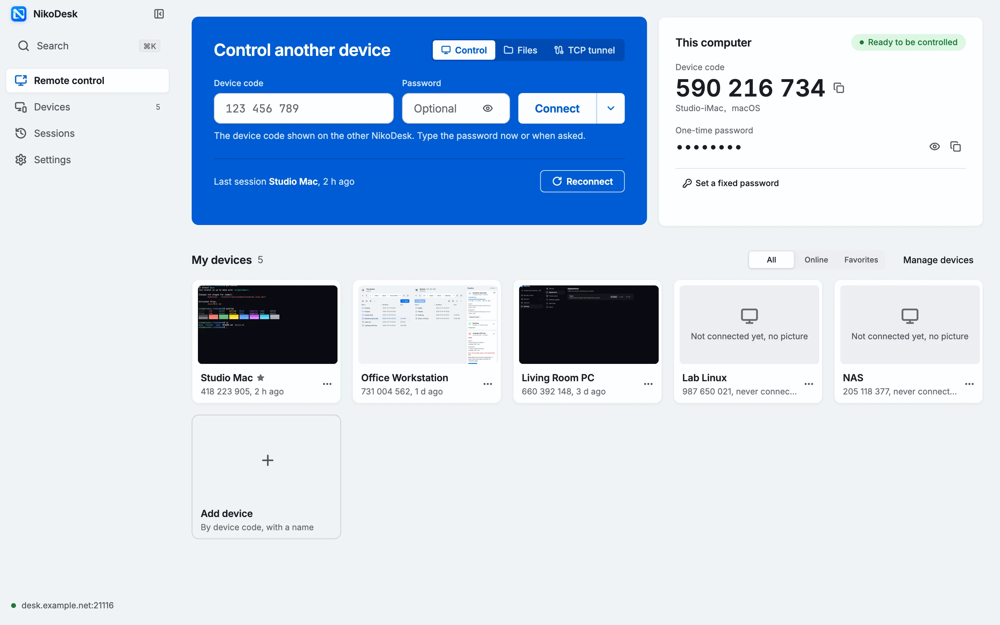
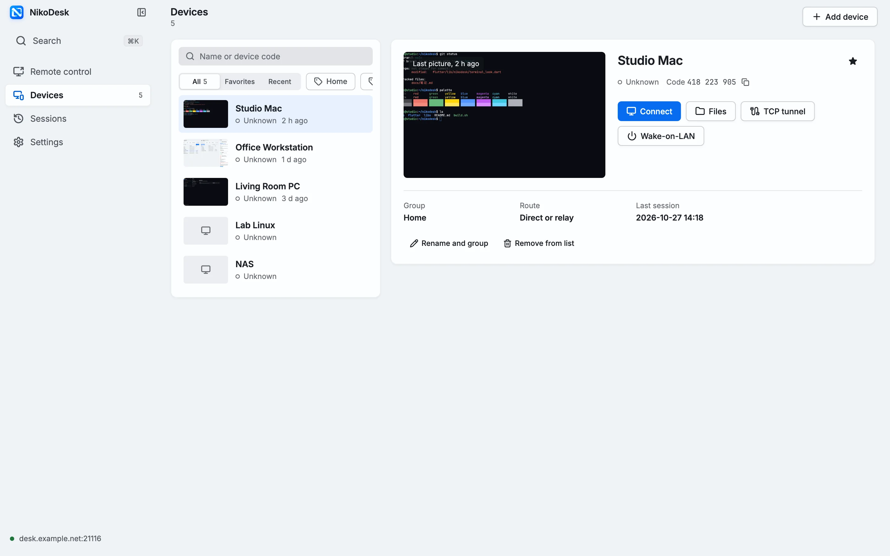
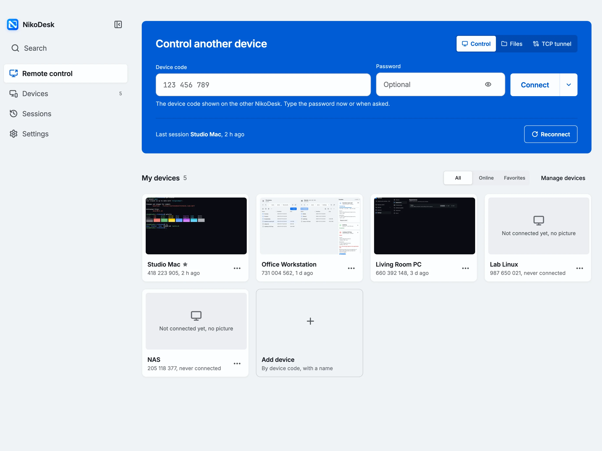
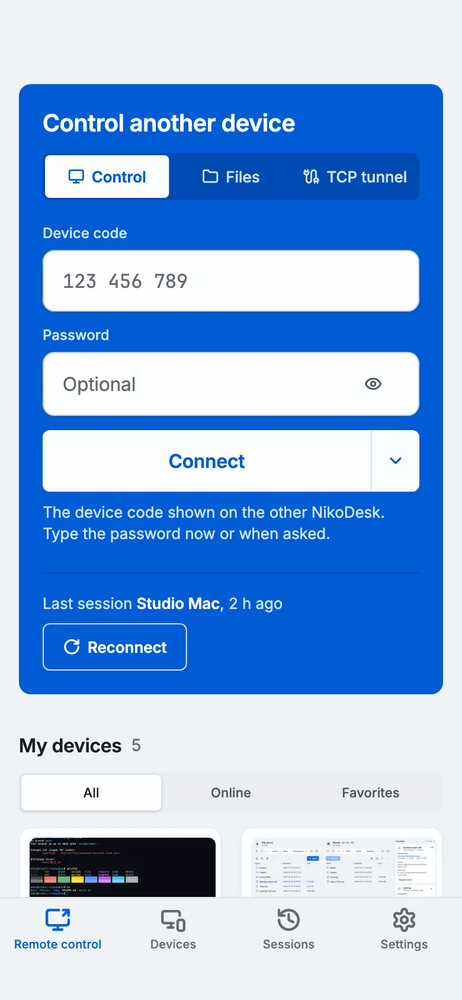
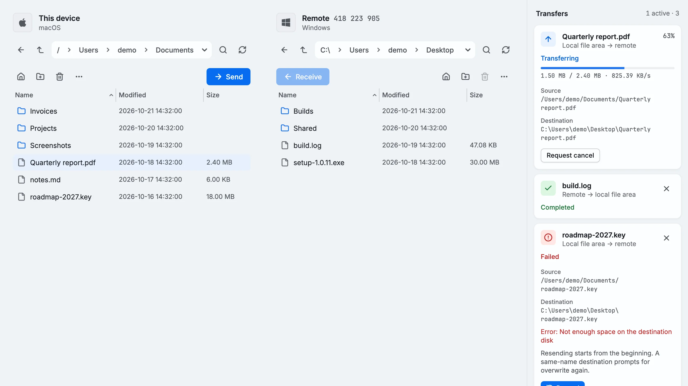
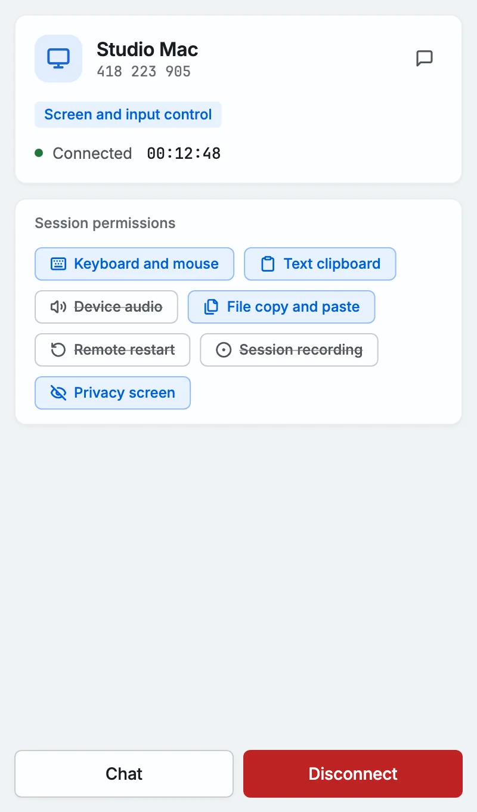
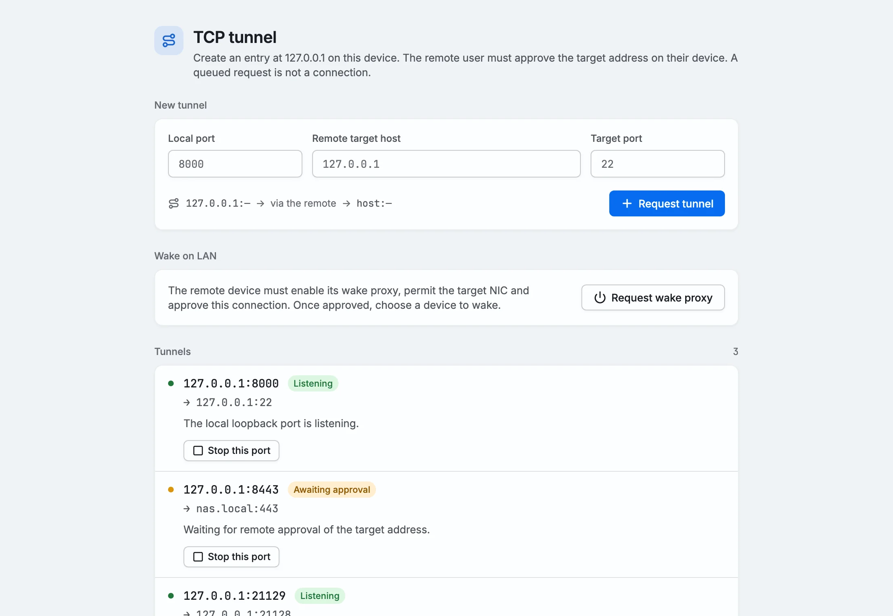
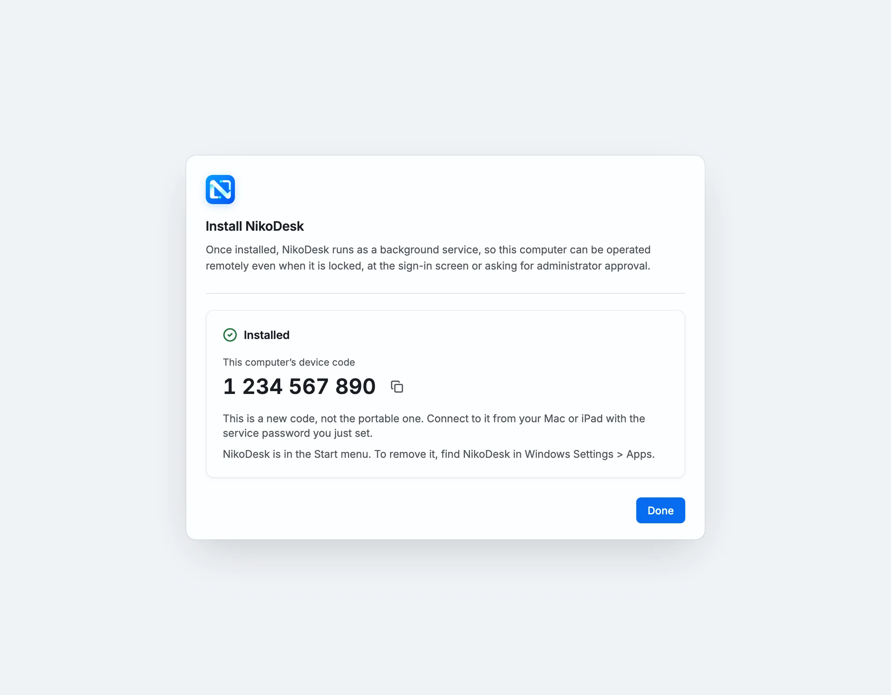

Remote desktop through your own server
Mac, Windows, iPad and Android, connected through a server you run.
Free and open source, AGPL-3.0. Needs a server of your own.

The same NikoDesk on every device
Type the other device’s code into the blue panel; the devices you use show their last screen.



Everything you need, once connected
Files, a terminal and port forwarding, while the other computer shows who is connected.

File transfer
Both sides at once; a name clash asks first.
Terminal
A command line on the other computer.
The host’s connection window
Who is connected, with which permissions; end it any time.
TCP tunnel
Reach a port on the other network, such as a NAS admin page.Windows, even when it is locked
From 3.0 Windows ships as an installer, and NikoDesk runs as a background service.
- The lock screen, sign-in and administrator prompts work remotely
- Starts with Windows
- In the Start menu; uninstall in Settings > Apps
It gets a new device code and password; use them on your Mac or iPad.

Your data stays on your machines
- Registration and relay
- hbbs and hbbr run on your server; NikoDesk uses no public server.
- Device list
- Kept on this device. No account.
- Passwords
- Not saved unless you choose to keep one.
- Each device’s last screen
- Kept on this device; turning it off deletes them.
Up and running in three steps
-
Start hbbs and hbbr on your server
Any machine with a public address, or an existing RustDesk Server OSS.docker run -d --name hbbs --net=host \ rustdesk/rustdesk-server-oss hbbs -r relay.example.com docker run -d --name hbbr --net=host \ rustdesk/rustdesk-server-oss hbbr # the key for both ends cat ./id_ed25519.pub -
Enter the server and key on both ends
In NikoDesk’s settings. -
Type a device code and connect
Both are on the other device’s home screen.
Pick your system
| System | Requires | File | Download |
|---|---|---|---|
| macOS | Apple silicon, macOS 12.3+ | DMG | Download |
| Windows | Windows 10 and 11, x64 | Installer | Download |
| Android | Android 7+, as a controller | APK | Download |
| iPad and iPhone | Build it from source | Source | Build guide |
The Mac app is not notarized: right-click it and choose Open. At Windows SmartScreen, choose More info, then Run anyway. Checksums are on the release page.